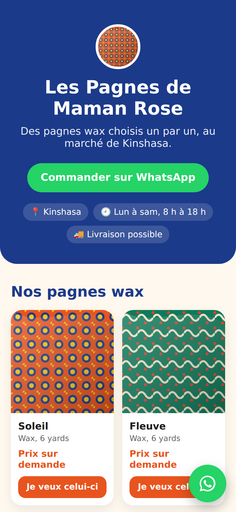
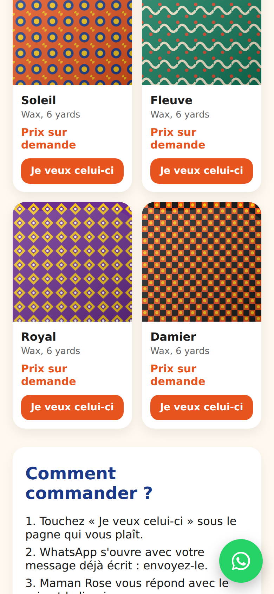
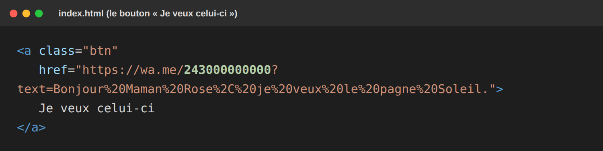
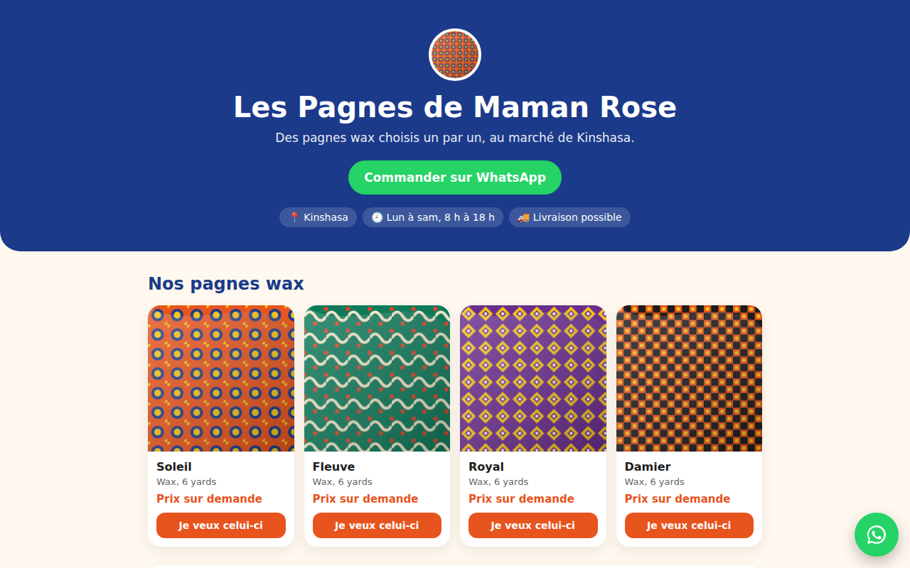

Une page avec tes produits et un bouton qui ouvre WhatsApp, la commande déjà écrite.
Sans savoir coder. En ligne gratuitement.

Une seule page, faite d'abord pour le téléphone. On y voit tes produits, et sous chacun un bouton « Je veux celui-ci ». La cliente touche le bouton : WhatsApp s'ouvre avec son message déjà écrit, elle n'a plus qu'à l'envoyer.
Pour une vendeuse qui vend sur WhatsApp, c'est un lien à mettre dans son statut, sa bio TikTok ou sur une carte avec un QR code.
Ce qu'il te faut
Avant de parler à l'IA, rassemble ces infos. C'est 10 minutes, et c'est ce qui fait une belle page.
| Nom de l'activité | Les Pagnes de Maman Rose |
| Ce qu'on vend, où | Pagnes wax, Kinshasa |
| Une phrase (slogan) | Des pagnes choisis un par un |
| 3 à 8 produits | Nom, petite description, prix (ou « prix sur demande »), nom de la photo |
| Numéro WhatsApp | 243 + le numéro sans le 0 |
| Horaires, adresse | Lun à sam, 8 h à 18 h |
| 2 couleurs | Bleu et orange |
Astuce : renomme tes photos simplement (soleil.jpg, fleuve.jpg…), sans espaces ni accents.
Copie, remplace ce qui est entre crochets avec ta fiche, et envoie :
L'IA te répond avec le code. Copie-le dans un fichier que tu appelles exactement index.html.

Capture : la vitrine de démo faite avec cette commande.
Ouvre index.html dans ton navigateur et vérifie :
C'est ce bouton qui transforme une visite en commande. Voici à quoi il ressemble dans le code :

Avec GitHub Pages, depuis un ordinateur ou le navigateur du téléphone :
Ce lien, tu le mets dans ton statut WhatsApp, ta bio TikTok, ou dans un QR code sur une petite carte.

La même vitrine sur ordinateur : elle s'adapte toute seule.
Aux entreprises (B2B)
Un service : tu fais leur vitrine sur mesure (clinique, école, hôtel, restaurant). Ils te paient pour le travail.
Aux particuliers (B2C)
Un produit : un modèle prêt à remplir + une petite vidéo qui montre comment le changer. Tu le vends sur Chariow, encore et encore.
Tu bloques ? Écris-moi sur WhatsApp : +243 831 710 181, avec une capture de là où tu bloques. Je te réponds.